Guia_de_funciones_meteorologicas
Source:vignettes/Guia_de_funciones_meteorologicas.Rmd
Guia_de_funciones_meteorologicas.RmdIntroduccion a PaqueteDatosMeteorologicos
El paquete PaqueteDatosMeteorologicos está diseñado para
facilitar la clasificación, transformación y visualización de datos
climáticos, centrándose en parámetros como la temperatura. Ofrece
herramientas para convertir entre escalas de temperatura, analizar datos
de distintas estaciones y generar resúmenes claros y útiles para el
análisis meteorológico. Este paquete proporciona un enfoque práctico
para trabajar con datos meteorológicos, integrando métodos esenciales
para una interpretación más eficiente.
Comenzando con el paquete
A continuación, se presenta una demostración rápida de algunas de las funcionalidades principales del paquete PaqueteDatosMeteorológicos. Exploraremos cómo:
- Clasificar la temperatura en categorías específicas usando la
función
clasificar_temperatura(). - Convertir temperaturas entre las escalas Celsius y Fahrenheit utilizando funciones dedicadas.
- Generar gráficos de temperaturas registradas en distintas estaciones meteorológicas.
- Crear resúmenes detallados de datos de una estación específica.
Cada ejemplo está diseñado para brindarte una comprensión práctica de cómo utilizar las funciones de manera efectiva en el análisis de datos meteorológicos. ¡Comencemos!
Clasificar Temperatura
La función clasificar_temperatura() permite categorizar
las temperaturas según rangos predefinidos. A continuación, un ejemplo
rápido:
temperatura <- 22 # Temperatura en grados Celsius
# Clasificar temperatura
clasificar_temperatura(temperatura)
#> [1] "Templado"Convertir de Celsius a Fahrenheit
La función convertir_cf convierte temperaturas de grados
Celsius a Fahrenheit. Aquí tienes un ejemplo:
celsius <- 25 # Temperatura en grados Celsius
# Convertir a Fahrenheit
convertir_cf(celsius)
#> [1] 77Convertir de Fahrenheit a Celsius
La función convertir_fc() convierte temperaturas de
grados Fahrenheit a Celsius. Ejemplo rápido:
fahrenheit <- 77 # Temperatura en grados Fahrenheit
# Convertir a Celsius
convertir_fc(fahrenheit)
#> [1] 25Resumen de una Estacion Meteorologica
La función tabla_resumen_temperatura() genera un resumen
estadístico de los datos registrados en una estación específica. Este
resumen incluye el promedio, la desviación estándar, y los valores
mínimos y máximos de la temperatura. Ejemplo:
tabla_resumen_temperatura('NH0910')
#> # A tibble: 1 × 4
#> promedio_temperatura desviacion_estandar minima maxima
#> <dbl> <dbl> <dbl> <dbl>
#> 1 17.7 6.12 -8.5 43Grafico de Temperaturas por Estacion
La función grafico_temperatura() permite visualizar las
temperaturas registradas en distintas estaciones meteorológicas. Un
ejemplo básico:
grafico_temperatura(NH0046)